|
Hai Wu 吴海 |
I am currently a assistant researcher at PCL, Shenzhen, China. I received my PhD from Xiamen University in December 2024. My research interests focus on computer vision and machine learning, particularly in exploring machine learning for autonomous systems. This includes 3D scene understanding, object detection, and other topics.
wuhai@stu.xmu.edu.cn
wuh05@pcl.ac.cn
News
- [2025/03] One paper accepted by CVPR 2025.
- [2025/01] Two papers accepted by AAAI 2025.
- [2024/07] One paper accepted by ECCV 2024.
- [2024/03] Two papers accepted by CVPR 2024.
- [2023/10] One paper accepted by AAAI 2024.
- [2023/10] One paper accepted by ICCV 2023.
- [2023/05] One paper accepted by CVPR 2023.
- [2023/06] We release the VirConv codebase, which can achieve SOTA results on KITTI detection dataset.
- [2023/05] Our approach VirConv-S ranks 1st on KITTI 3D/BEV/2D object detection benchmark. Please refer to our paper VirConv for more details.
Publications
| 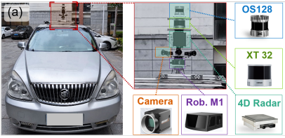 |
CMD: A Cross Mechanism Domain Adaptation Dataset for 3D Object Detection |
| 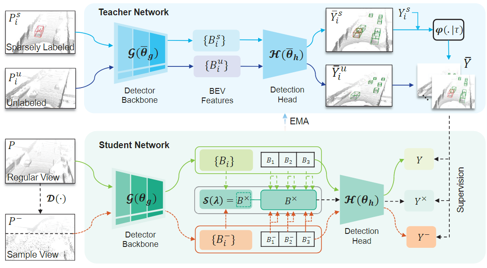 |
HINTED: Hard Instance Enhanced Detector with Mixed-Density Feature Fusion for Sparsely-Supervised 3D Object Detection |
| 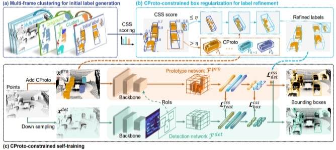 |
Commonsense Prototype for Outdoor Unsupervised 3D Object Detection |
| 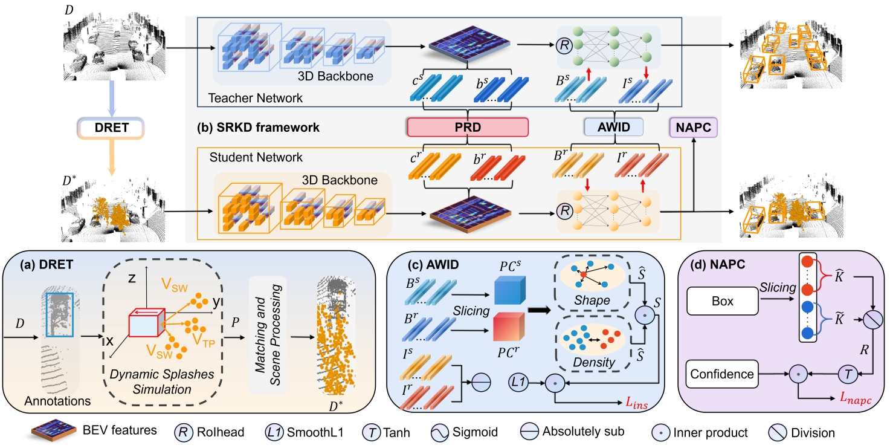 |
Sunshine to Rainstorm: Cross-Weather Knowledge Distillation for Robust 3D Object Detection |
| 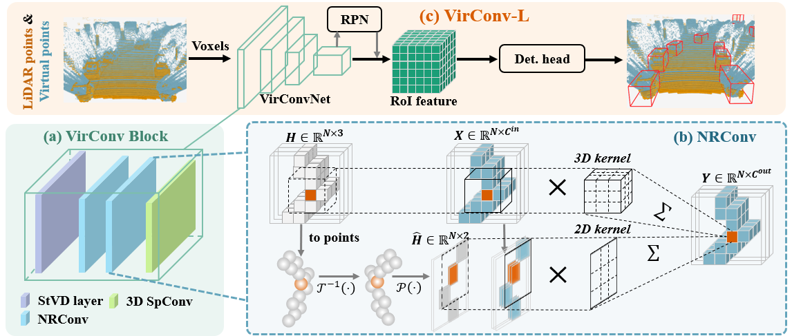 |
Virtual Sparse Convolution for Multimodal 3D Object Detection |
| 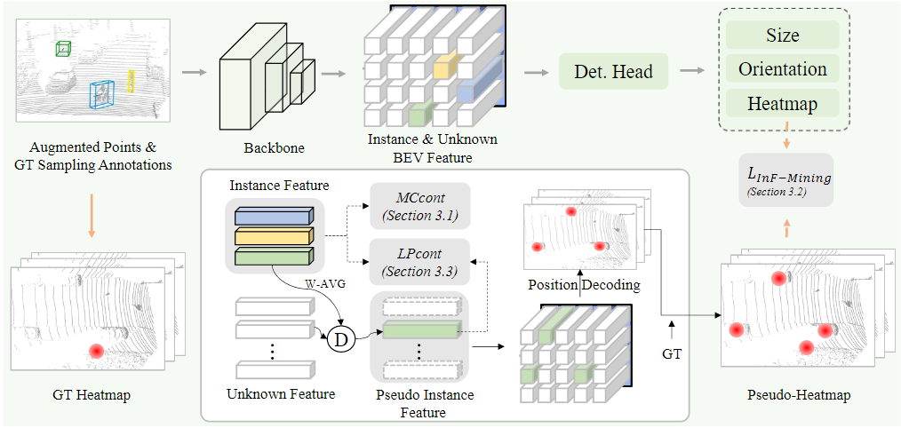 |
CoIn: Contrastive Instance Feature Mining for Outdoor 3D Object Detection with Very Limited Annotations |
| 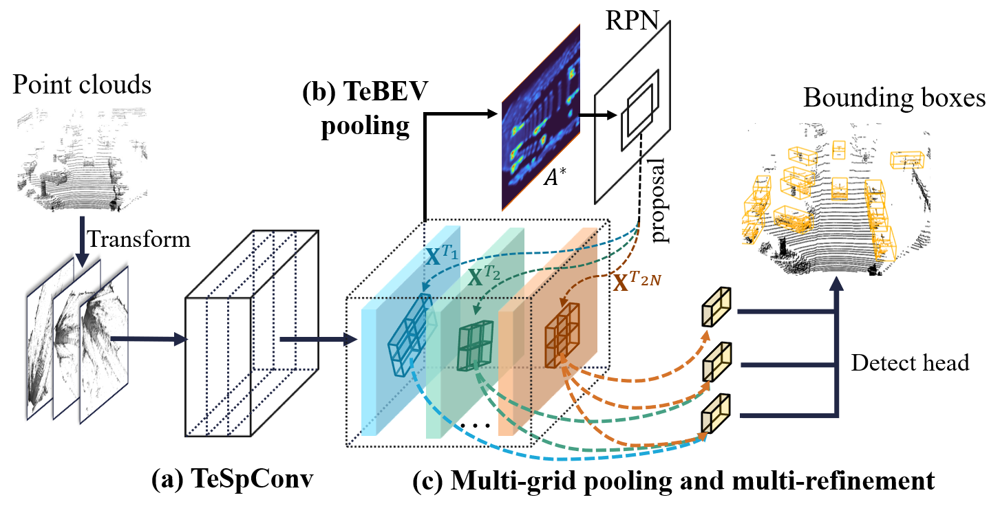 |
Transformation-equivariant 3D object detection for autonomous driving |
 |
CasA: A cascade attention network for 3-D object detection from LiDAR point clouds |
| 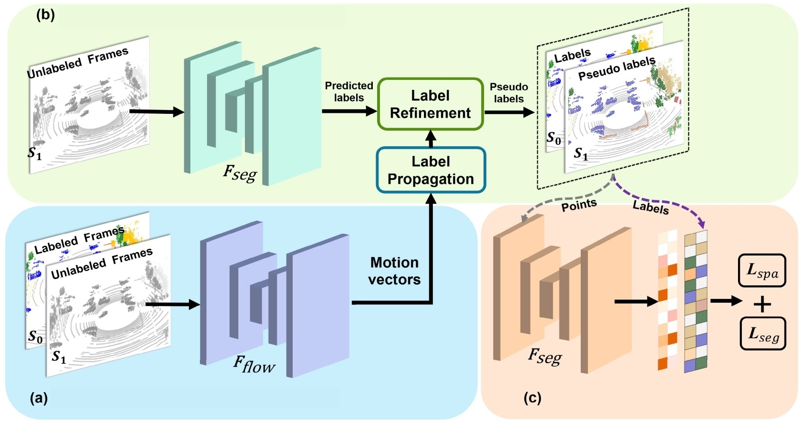 |
SemanticFlow: Semantic Segmentation of Sequential LiDAR Point Clouds From Sparse Frame Annotations |
| 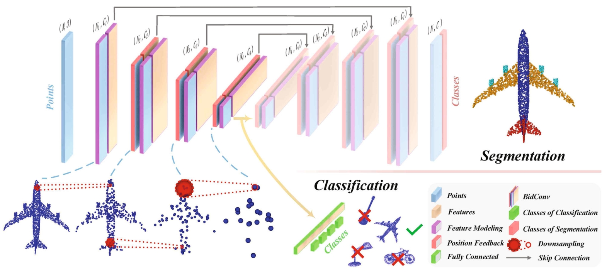 |
BLNet: Bidirectional learning network for point clouds |
| 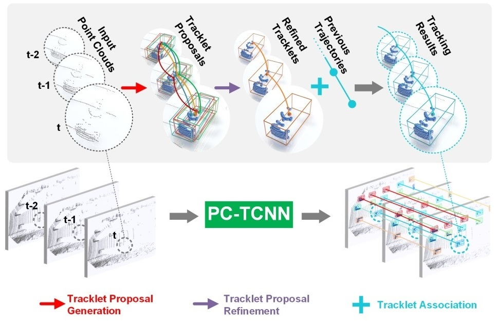 |
Tracklet Proposal Network for Multi-Object Tracking on Point Clouds |
| 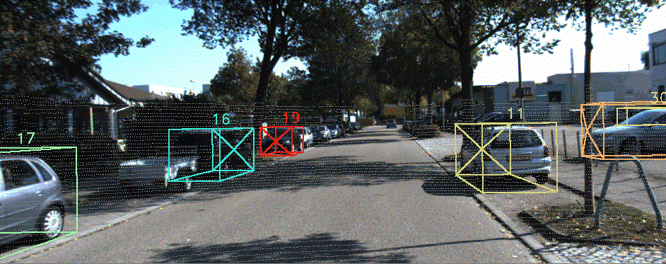 |
3D multi-object tracking in point clouds based on prediction confidence-guided data association |
| 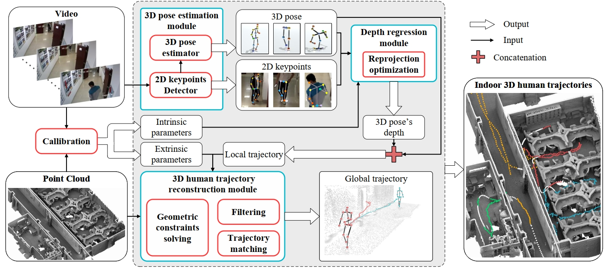 |
Indoor 3D human trajectory reconstruction using surveillance camera videos and point clouds |
| 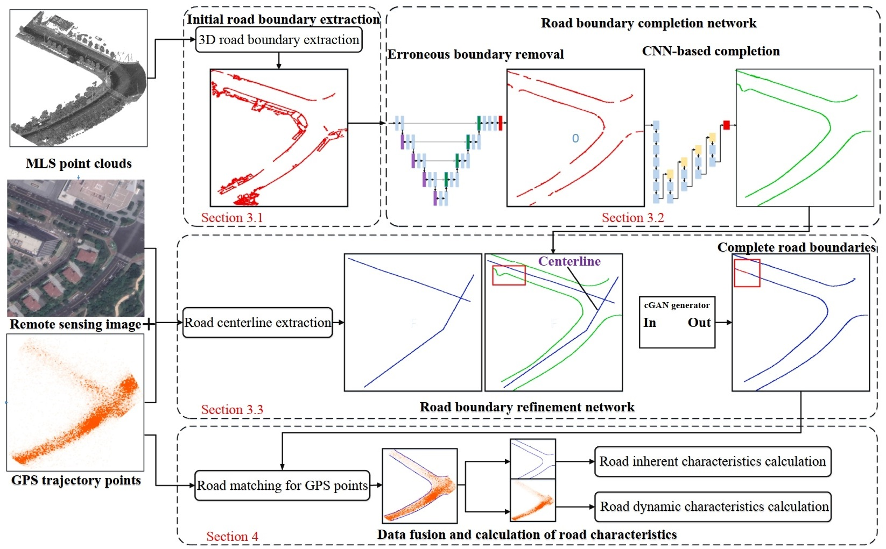 |
Recovery of urban 3D road boundary via multi-source data |
Activities
Reviewer:
IEEE Conference on Computer Vision and Pattern Recognition (CVPR) Internship: Research Intern, March 2022 - June 2022, Inceptio technology, Shanghai, China.
National scholarship, 2023 The journey is long and arduous 路漫漫其修远兮，吾将上下而求索 I will explore it with unyielding spirit
Conference on Neural Information Processing Systems (NeurIPS)
International Conference on Learning Representation (ICLR)
AAAI Conference on Artificial Intelligence (AAAI)
IEEE Transactions on Pattern Analysis and Machine Intelligence (TPAMI)
IEEE Transactions on Image Processing (TIP)
IEEE Transactions on Geoscience and Remote Sensing (TGRS)
IEEE Transactions on Intelligent Transportation Systems (TITS)
Advised by Ruigang Yang. Academic Competition and Awards
Second prize in data processing at LiDAR Conference, 2023
VirConv-S ranks No.1(car) on the KITTI 2D, 3D and BEV detection leaderboard, 11/2022
VirConvTrack ranks No.1(car) on the KITTI tracking leaderboard, 11/2022
CasTrack ranks No.1(car) on the KITTI tracking leaderboard, 09/2022
TED ranks No.1(car) on the KITTI 3D detection leaderboard, 05/2022
PC-TCNN ranks No.1(car) on the KITTI tracking leaderboard, 01/2021
Excellent student scholarship, 2021
© Hai Wu, 2023 - 2025